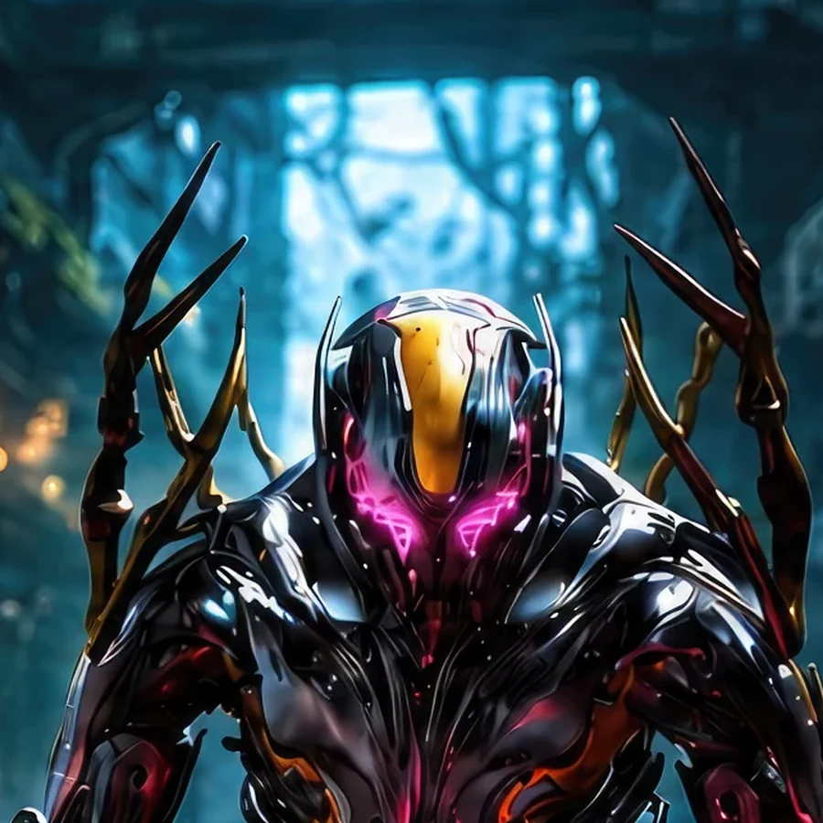
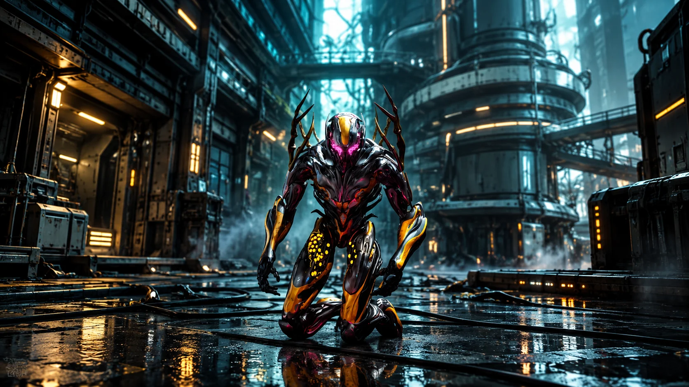
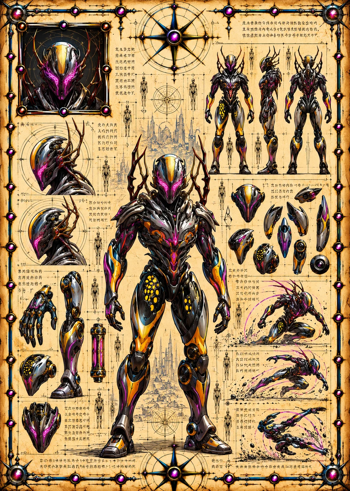

Field Observation
Kseka left a green alien containment canister operating along the left wall on Earth 1. The canister establishes hostile alien processing capacity inside the facility.

GENEZYS ARCHIVE · EARTH 1 · Synthbot
Field Projector
Identity & combat record
Archive node 01 / 05

Archive record
Kseka projects barrier fields for the Mortis Syndicate, though few of them protect anyone but Kseka. The Aegis Dome drains an enemy's energy before the shot lands. On Earth 2, Kseka's pilot is a junior engineer of the Syndicate, and is determined not to stay junior for long.
Combat signature
Projects spherical barrier field: Reduces the target's Cosmara by 110 and deals 50 damage.
Genezys 04:01 ™&©2026LEGIONS
Recovered visual record
Archive node 02 / 05

Full frame available // rotate device to landscape
Technical archive
Archive node 03 / 05

Classified field intelligence
Archive node 04 / 05
FIELD REPORT // HOSTILE CANISTER
Classified search directiveFind the inconsistency hidden in this record
Field Observation
Kseka left a green alien containment canister operating along the left wall on Earth 1. The canister establishes hostile alien processing capacity inside the facility.
Environment
Object Analysis
Key Findings
Motion archive
Archive node 05 / 05
Motion record not yet recovered